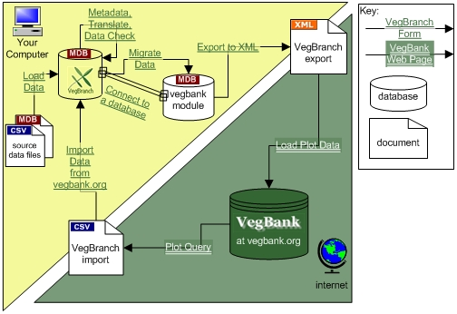

VegBranch
VegBranch
Download | Overview | Loading Module | Help
VegBranch is a Microsoft Access database designed primarily to import legacy vegetation plot data, modify those data to conform to VegBank standards, migrate the data to the VegBank format, then prepare the data to be sent to the VegBank server (vegbank.org).
There are help files associated with VegBranch that describe each function of VegBranch in detail. VegBranch now supports downloading of data from VegBank so that one can easily manipulate and analyze data on their home computer (see the Main Menu in VegBranch for details). The following overview helps show the relationship between VegBranch and the other VegBank components. Click the overview to see a larger version in a new browser window.
Step-by-Step Explanation of Overview is available here.